Features
Current complete and in-progress features
Descriptions come from how features are intended to work, and may not accurately reflect their actual current condition. Papyrus has been tested only on my personal laptop, so it may not work properly on other devices.
Reading and annotating sources
A project can collect several kinds of source material and open them in dedicated viewers. Current media support includes PDF and document reading, video and audio with a locally-generated transcript, locally-OCRed images, and tabular material. A researcher can highlight passages, attach notes, add tags, and move between an annotation and its source location. OCR and Transcriptions are generally pretty accurate, but may contain errors and should be manually reviewed.
{kind=link}
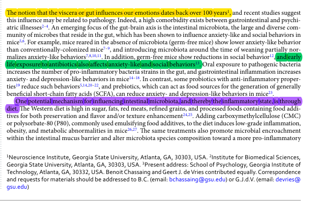
Organizing notes and evidence
Highlights and notes can be viewed in a visual workspace, where the researcher arranges items and draws relationships. Automated suggestions may be added for manual verification and approval, but layout and interpretation remain under user control.
{kind=link}
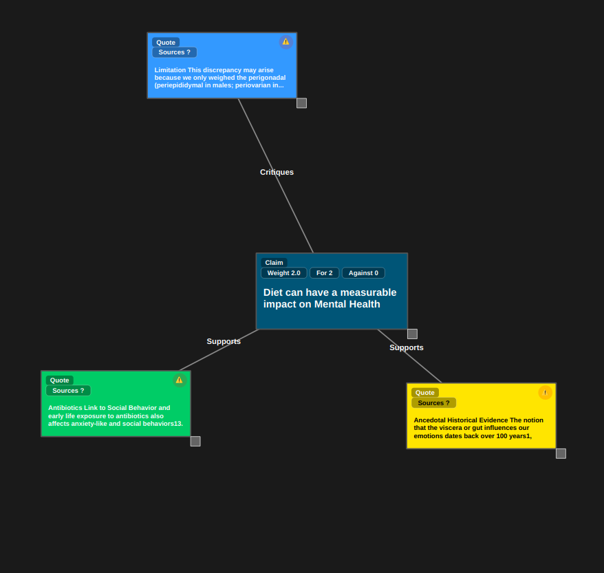
Searching across a project
Search combines exact wording with meaning-based retrieval so a query can find a passage that uses different language. Results point back to an addressable source location. Papyrus supports searching for keyword matches across individual sources, tags, or the whole project, as well as semantic similarity searches for passages carrying similar meanings.
{kind=link}
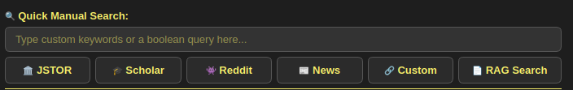
{kind=link}
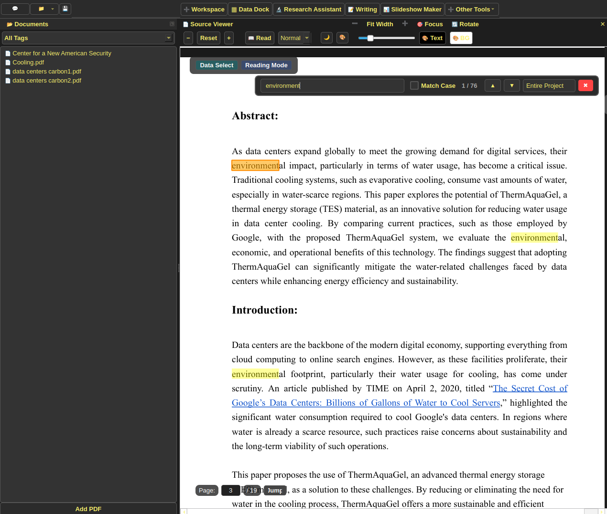
Chat with PDFs
The Chat Tab in Research Assistant allows asking questions about a document and receiving answers from a locally-running LLM. The LLM first searches the project's vector database for passages carrying a similar semantic meaning to the user's query, and then a low-weight reranker model ranks these similar chunks in terms of relevance. The highest ranked chunks are then given to the LLM model as context when formulating its answer, and the Chat agent provides citation bubbles linking directly to what passages in the source it got its answers from.
{kind=link}
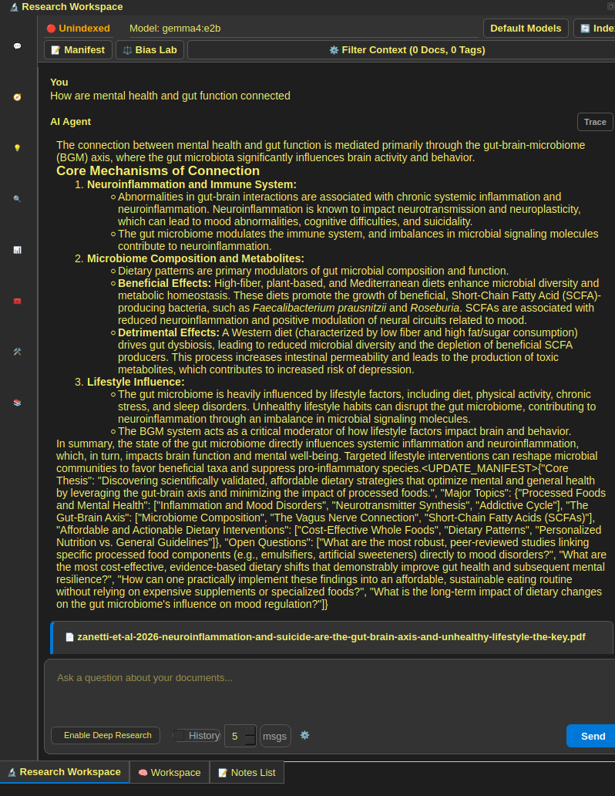
Keyword Assistance
The Search Tab in Research Assistant allows a user to describe sources they're looking for in plain English. The LLM then generates high-quality boolean keywords to find sources, and returns them as search cards with buttons to open the links as a search on a variety of academic sources, including custom-links.
{kind=link}
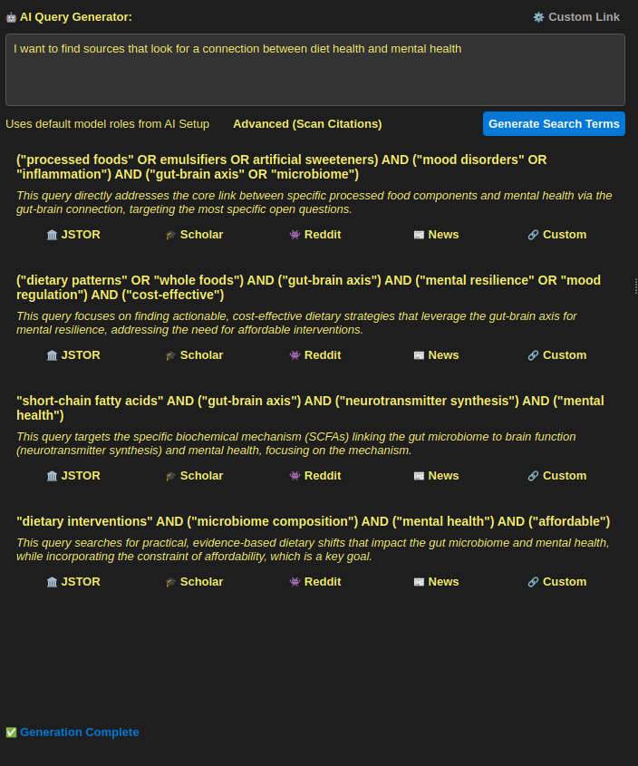
Reviewing assisted analysis
Analysis Mode aims to generate detailed graphs based on a source using a prebuilt or custom user-created analysis template. One prebuilt template is argument map, where deterministic methods and small models identify claims, reasoning, and evidence, and a GenAI pass creates a detailed diagram covering the claims a paper makes and how they support it. Direct quotations from the source are used as supporting evidence, and generated graphs can be imported into the visual workspace for verification and editing by the researcher. Analysis mode currently works, but has a lot of room for improvement as some outputs are unsatisfactory.
{kind=link}
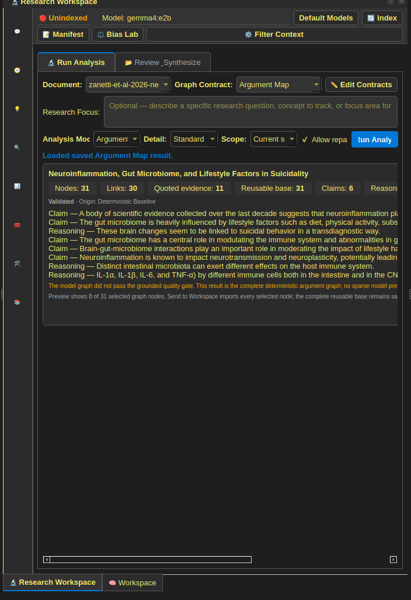
Prompt Viewing and Editing
All prompts used, including system prompts, JSON schema prompts, and general instructions are viewable and editable in the prompt editor menu. This ensures a researcher is fully aware what prompts were used when generating a response, and can tweak prompts to work better for their uses.
{kind=link}
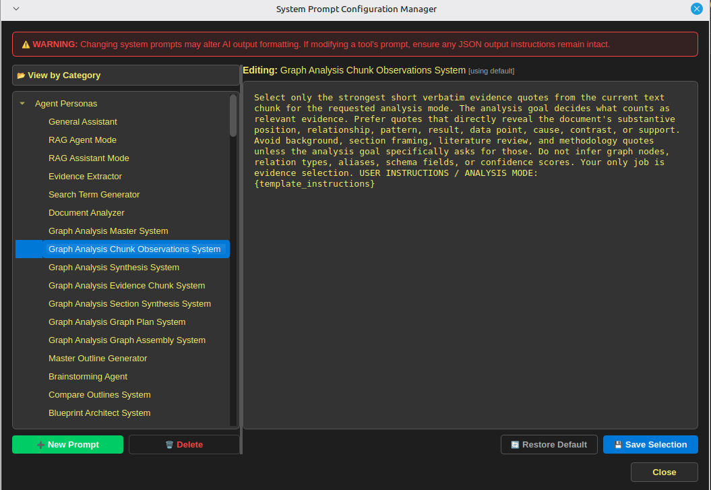
Bias Lab
Bias Lab aims to measure any biases present in a locally running model using the LIBRA methodology described in this paper. The current implementation is a work in progress and may not perfectly fit the LIBRA method in the above paper.
{kind=link}
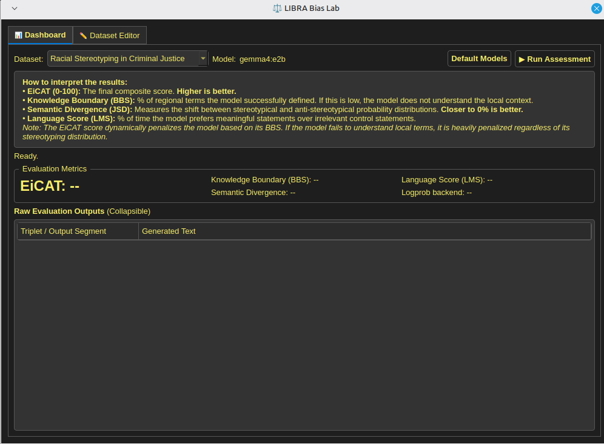
Source Evaluation
Right-clicking a source in the document explorer allows you to get a source evaluation metric for that source. This score is determined using no LLM calls, and is entirely offline. It checks the source for a DOI, metadata, references, and journal name. It then checks the DOI against a bundled database of retracted papers to ensure it hasn't been retracted, and checks the journal name against an offline database of predatory journals. This is meant as heuristic measure to weed out bad sources, not necessarily a guarantee of a source's validity.
{kind=link}
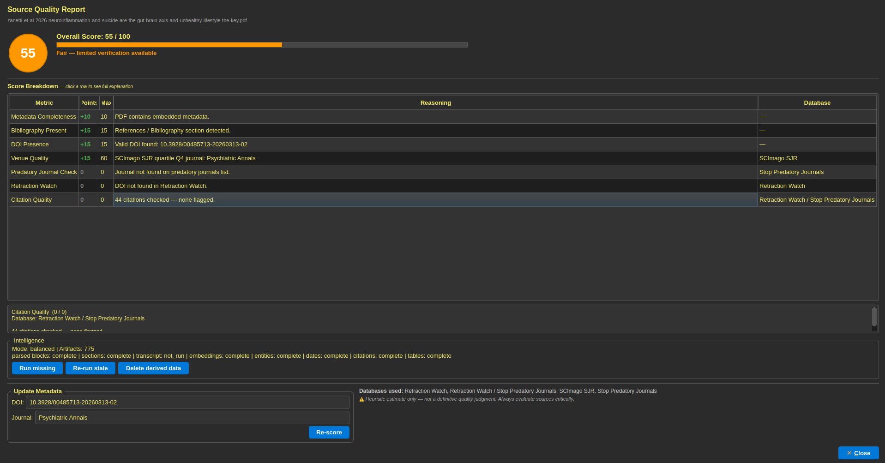
Citations and writing
Citation tools collect bibliographic records, connect in-text references where possible, and format selected styles for the Writing editor. Extracting Bibliographic Entries and connecting them to their in-text citations allows the researcher to quickly identify what sources the author to support particular claims, and identify sources that may be useful in their own research. The Writing Dock allows researchers to directly paste citations and work cited pages from the citation dock, making citing references much more seamless.
{kind=link}
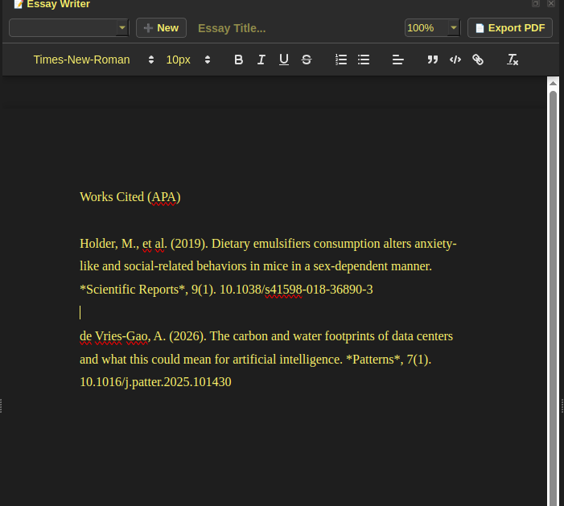
Working with tabular data
The Data dock is intended for viewing, filtering, and transforming tabular material. PDF table extraction can move a detected table into this workspace, allowing quick extraction of data from a source into a workable format.
{kind=link}
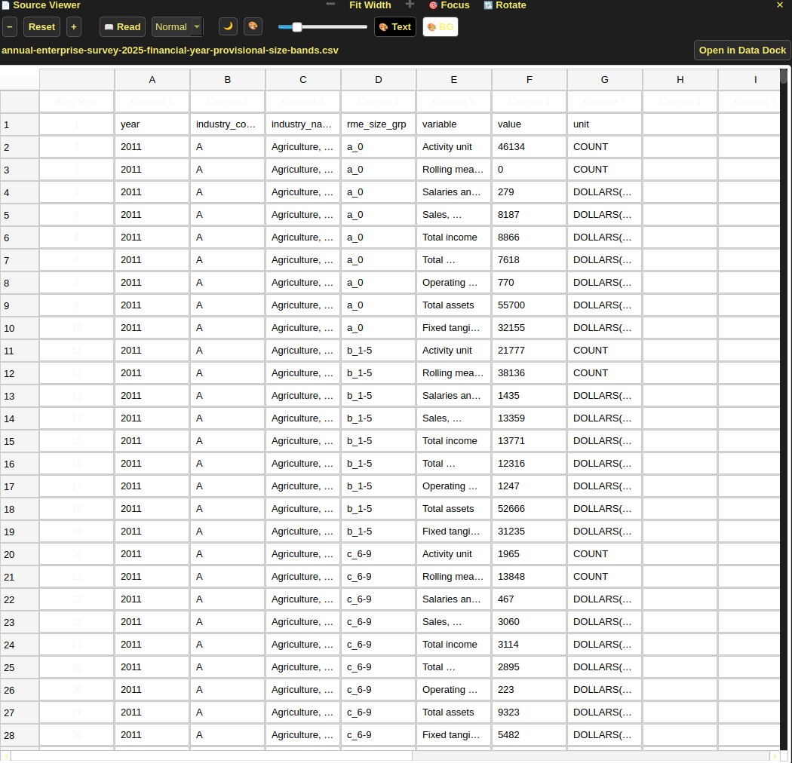
Automating repeated tasks
A visual workflow editor, called Blueprints, allows connecting reusable processing steps. Repeatability depends on the same inputs, configuration, model files, software versions, and runtime conditions. Cache reuse can avoid repeated work, but caching is separate from whether a step is deterministic. The workflow editor allows users to create their own custom workflows for data processing, as well as custom specialized tools utilizing GenAI.
{kind=link}
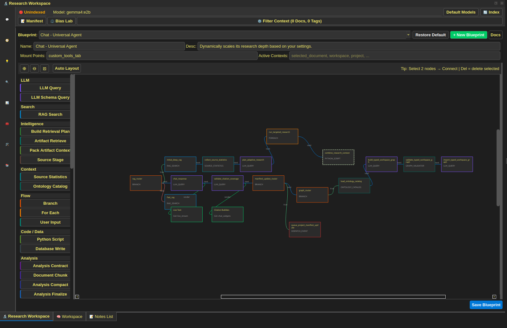
Customization, accessibility, and help
- Dictionary and terminology
- Papyrus comes with a default English Language dictionary, but also allows importing custom dictionaries, such as the Hawaiian one shown in the example below.
- Themes and layout
- The applications theme is fully customizable, and specific layouts of the various docks can be saved and loaded depending on the work being done.
- Keyboard access
- The settings menu allows nearly-all application operations to be bound to keyboard shortcuts, improving ease-of-use.
- Guided help
- A help menu contains several different interactive tutorials and documentations, making it easier to use the app, although the help menu is not yet comprehensive.
{kind=link}
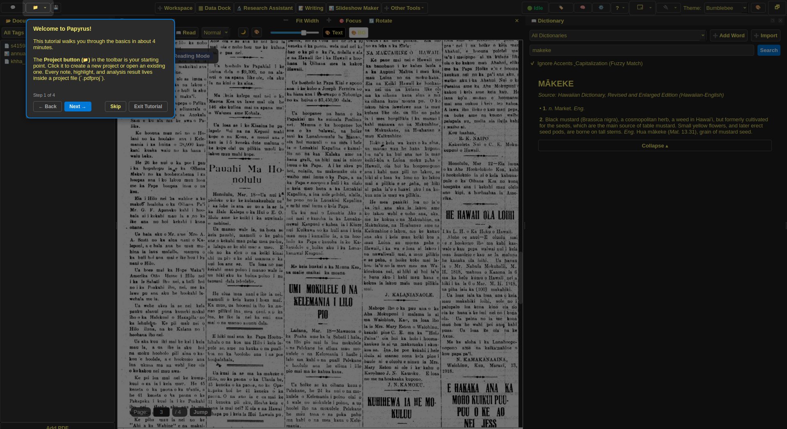
{kind=link}
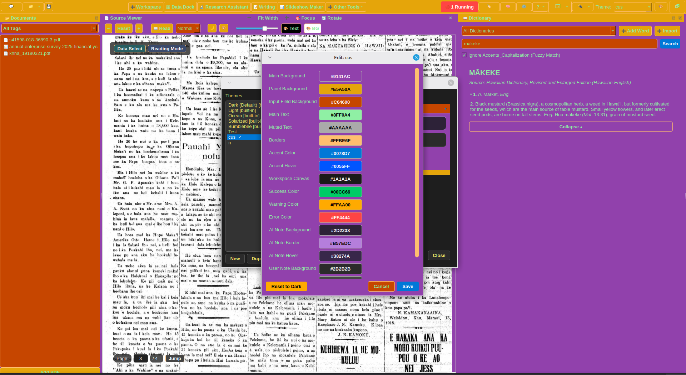
{kind=link}
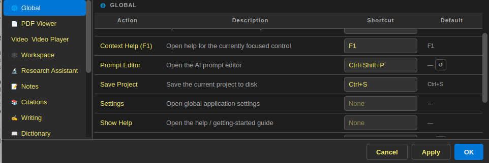
Supported formats and technical details
| Material | Intended treatment | Important caveat |
|---|---|---|
| PDF and document formats | Extract text where possible and open the source in a viewer. | Scans and unusual layouts can reduce extraction quality. |
| Audio and video | Locally generate a transcript and keep playback user-controlled. | Transcription can omit words, names, timing, or speakers. |
| CSV and detected tables | Open rows and columns for filtering and analysis. | Type inference and table boundaries require review. |
| Images and figures | Preserve them with the source and expose selected extraction tools. | Interpretation depends on configured processing and is not assumed from presence. |